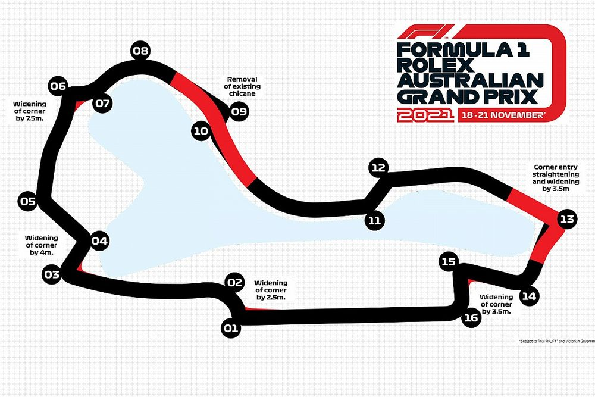
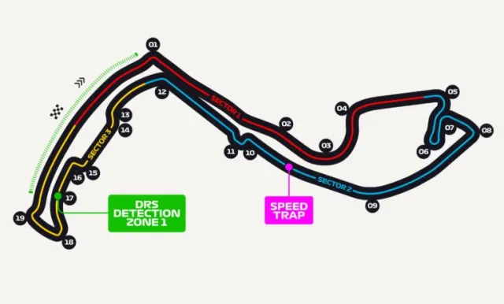

Kıyasıya rekabetin yaşandığı 2026 sezonunda takvim yine birbirinden zorlu ve tarihi pistlere ev sahipliği yapıyor. Yeni nesil araçların sınırlarının zorlandığı bu arenalar, hem pilotlar hem de mühendisler için en büyük test alanı. İşte bu sezonun öne çıkan üç önemli durağı:

2026 sezonunun açılış yarışına ev sahipliği yapan Melbourne'deki efsanevi yarı sokak pisti. Mercedes'in sezona dubleyle (Russell ve Antonelli) başlayarak gövde gösterisi yaptığı bu pist, yeni kuralların ilk büyük sınavı oldu.

Formula 1'in tacındaki mücevher. Dar sokakları, sıfır hata payı ve bariyerlere teğet geçilen virajlarıyla motor gücünden ziyade saf pilotaj yeteneğinin konuştuğu efsanevi durak.

Formula 1'in doğduğu efsanevi İngiliz pisti. Maggotts, Becketts ve Chapel gibi art arda gelen yüksek hızlı virajlarıyla araçların aerodinamik performansının en net ölçüldüğü yer.
İster Albert Park'ın hızlı virajlarında, ister Monaco'nun dar sokaklarında olsun, 2026 sezonu her pistte ayrı bir strateji savaşı sunuyor.
Hazırlayan: Enes Çetin - Düzce Üniversitesi